방송통신산업기사 (2002-09-08 기출문제)
1과목: 디지털 전자회로
1. 다음 그림의 회로는 무슨 회로인가?
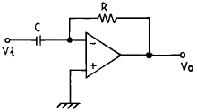
- 미분기
- 적분기
- 가산기
- 증폭기
(정답률: 알수없음)

2. 트랜지스터의 활성영역에서 베이스 접지시 전류증폭율 α 가 0.98, 역포화 전류 Ico가 100[㎂], 베이스 전류가 IB = 10[㎃]일 때, 콜렉터 전류 IC는?
- 495[㎃]
- 49.5[㎃]
- 4.9[㎂]
- 0.5[㎂]
(정답률: 알수없음)
3. 다음은 수정편의 리액턴스 특성이다. 발진에 이용될 주파수 범위는?
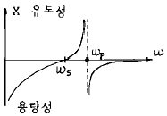
- ωS ＜ ω ＜ ωP
- ω P ＜ ω
- ω S ＜ ω
- ω S ＞ ω ＞ ω P
(정답률: 알수없음)
4. 다음중 그 값이 작을수록 좋은 것은?
- 증폭기 바이어스 회로의 안정계수
- 차동 증폭기의 동상신호 제거비(CMRR)
- 증폭기의 신호대 잡음비
- 정류기의 정류효율
(정답률: 알수없음)
5. 정논리회로에서의 다음 트랜지스터 회로의 기능은?
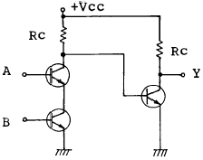
- OR회로
- AND회로
- NAND회로
- EOR회로
(정답률: 알수없음)
6. 다음 부울대수식과 등가인 것은?
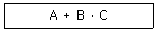
- AㆍBㆍ(A+C)
- (A+B)ㆍ(A+C)
- (A+B)ㆍAㆍC
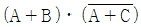
(정답률: 알수없음)
7. 두개의 입력이 동시에 1 이 되었을 때에도 불확실한 출력상태가 되지 않도록 두개의 Flip-Flop을 사용한 회로는?
- RS F-F
- D F-F
- Master slave F-F
- T F-F
(정답률: 알수없음)
8. 변조도가 100[%]인 AM파의 출력 전력이 6[KW]라면 반송파 성분의 전력은 얼마인가?
- 2[KW]
- 4[KW]
- 8[KW]
- 12[KW]
(정답률: 알수없음)
9. 발진이 생성될 수 있는 기본조건은?
- 회로의 증폭률이 최소 5 이상 필요하다.
- 증폭기에 부궤환회로를 부가한다.
- 공진결합회로가 필요하다.
- 증폭기에 정궤환회로를 부가한다.
(정답률: 알수없음)
10. 다음 연산 증폭기에서 출력 전압의 크기는?
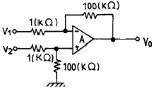
- V0 = 100(V2 - V1)
- V0 = V2 + V1
- V0 = 99(V1 - V2)
- V0 = V2 - V1
(정답률: 알수없음)
11. 전원회로에서 무부하시 600[V], 부하시 500[V] 였다면 전압변동률은 얼마인가?
- 20%
- 30%
- 35%
- 45%
(정답률: 알수없음)
12. 다음 논리 회로 중 팬 아웃(fan out)의 수가 많은 회로는?
- DTL 게이트
- TTL 게이트
- RTL 게이트
- DL 게이트
(정답률: 알수없음)
13. 다음 중 레지스터의 기능은?
- 펄스 발생기이다.
- 카운터의 대용으로 쓰인다.
- 회로를 동기시킨다.
- 데이터를 일시 저장한다.
(정답률: 알수없음)
14. PLL의 구성에 불필요한 것은?
- 위상검출기(PD)
- 전압제어 발진기(VCO)
- 저역통과필터(LPF)
- 자동주파수 제어(AFC)
(정답률: 알수없음)
15. R-S Flip-Flop을 J-K Flip-Flop으로 만들고자 할 때 필요한 게이트(gate)는?
- OR gate 2개
- AND gate 2개
- NOR gate 2개
- NAND gate 2개
(정답률: 알수없음)
16. 플립플롭을 구성하는데 주로 이용되는 회로는?
- 쌍안정 멀티바이브레이터
- 단안정 멀티바이브레이터
- 비안정 멀티바이브레이터
- 무안정 멀티바이브레이터
(정답률: 알수없음)
17. 주파수 3[㎑]로 3[㎒]의 반송파를 주파수 변조하였을때 최대 주파수 편이가 ± 75[㎑]라면 소요 대역폭은?
- 225[㎑]
- 156[㎑]
- 150[㎑]
- 112.5[㎑]
(정답률: 알수없음)
18. 수정발진회로가 갖는 가장 큰 특징은?
- 잡음의 경감
- 출력의 증대
- 효율의 증대
- 발진주파수의 안정
(정답률: 알수없음)
19. 전가산기(full adder)의 입출력 구조는?
- 입력 2개, 출력 2개
- 입력 3개, 출력 2개
- 출력 3개, 입력 2개
- 출력 3개, 입력 3개
(정답률: 알수없음)
20. 다음 중 연산 증폭기의 특성과 관련 없는 것은?
- 높은 이득
- 낮은 CMRR
- 높은 입력 임피던스
- 낮은 출력 임피던스
(정답률: 알수없음)
2과목: 방송통신 기기
21. 방송통신기기 국내 위성 방송에서 사용하고 있는 전파의 편파는?
- 수직편파
- 수평편파
- 우회전편파
- 좌회전편파
(정답률: 알수없음)
22. 지상 TV 방송을 위해서는 일반적으로 VHF 및 UHF 주파수대가 이용된다. 현재 우리나라에서 지상 TV 방송용으로 이용되고 있는 주파수대가 아닌 것은?
- 54 ㎒ - 88 ㎒
- 114 ㎒ - 156 ㎒
- 174 ㎒ - 216 ㎒
- 470 ㎒ - 890 ㎒
(정답률: 알수없음)
23. HDTV, 디지털 영상 저장, 영상 전화 등에 사용되는 영상 압축방식이 아닌 것은?
- AC-2
- JPEG
- MPEG
- H.261
(정답률: 알수없음)
24. TV의 영상신호 전송방식은?
- 직렬전송방식
- 병렬전송방식
- 직병렬전송방식
- 종속전송방식
(정답률: 알수없음)
25. 우리나라의 지상파 디지털 TV규격중 맞는것은?
- 변조방식 : 8-VSB, 영상 : MPEG-2 MP@ML 및 MP@HL, 음성 : AC-3
- 변조방식 : 16-VSB, 영상 : MPEG-2 MP@ML 및 MP@HL, 음성 : AC-3
- 변조방식 : 16-VSB, 영상 : MPEG-2 MP@ML 및 MP@HL, 음성 : MPEG-1
- 변조방식 : COFDM, 영상 : MPEG-2 MP@ML 및 MP@HL, 음성 : AC-3
(정답률: 알수없음)
26. NTSC방식의 텔레비전 방송에서 1초간에 전송되는 화상의 수는 얼마인가?
- 30개
- 60개
- 50개
- 1152개
(정답률: 알수없음)
27. 다음 그림은 방송국에서 TV 신호의 발생 및 송신과정을 나타낸 것이다. (A)와 (B)에 들어갈 적절한 기기는?
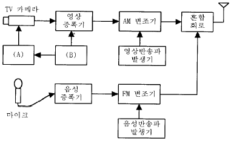
- A : 혼합기 B : 발진신호 발생
- A : 편향기 B : 동기신호 발생
- A : 색혼합기 B : 칼라신호 발생
- A : 색조정기 B : 반송파신호 발생
(정답률: 알수없음)
28. 그림에서 아날로그신호 s(t)를 표본화 주기 1[sec], 양자화 레벨 4인 PCM으로 변조한 결과중 옳은 것은?
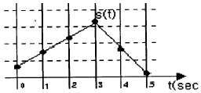
- 000110110100
- 011011010010
- 011100011100
- 001011011000
(정답률: 알수없음)
29. 반송파주파수가 100[KHz]이고, 신호파주파수가 4[KHz]인 두 전파의 진폭변조 파형이 오실로스코프상에 나타나 있다. 이 파형에서 진폭이 가장 큰점의 높이는 5[cm]이고 진폭이 가장 낮은 점에서의 높이는 2[cm]라고 한다. 이 송신기의 출력이 150[Kw]일 때 반송파전력은 얼마인가?
- 137[Kw]
- 13.7[Kw]
- 147[Kw]
- 14.7[Kw]
(정답률: 알수없음)
30. 영상신호에서 페데스탈 레벨과 흑색 레벨과의 차이를 의미하는 것은?
- 흑색 레벨
- 블랭킹 레벨
- 셋업 레벨
- 동기첨단 레벨
(정답률: 알수없음)
31. MPEG-1 오디오 압축기법 중 LayerⅠ과 Ⅱ와 달리 LayerⅢ의 특징이 아닌 것은?
- 서브밴드 부호화
- MS 스테레오 부호화
- MDCT(Modified Discrete Cosine Transform, 변형 이산 여현 부호화)
- 허프만 부호화
(정답률: 알수없음)
32. 칼라 TV 전송방식중 2개의 색차신호를 선순차방식으로 FM 변조하여 전송하고 수신측에서 1라인 메모리를 사용하여 동시신호로 변환하는 방식으로 전송계에서 생기는 일그러짐의 영향을 적게 받으며 색상이 변하지 않아 수상기의 색조정이 필요없는 전송방식은?
- SECAM방식
- PAL방식
- CAPTAIN방식
- NTSC방식
(정답률: 알수없음)
33. 오디오믹서 (Audio Mixer)의 Equalizing의 기능을 가장 잘 설명한 것은?
- 소재음의 입력을 선택한다.
- 선택된 각 소재음의 레벨을 페이더(fader)에 의해 조정하는 기능이다.
- 음질을 조정하거나 불필요한음, 귀에 거슬리는 음 등을 제거하는 기능과 일부의 주파수 대역 성분만을 강조 하거나 감쇠시키는 기능이다.
- 믹서의 시스템 성능을 측정하기 위하여 믹서내에 내장되어 설치된 주파수 발생장치이다.
(정답률: 알수없음)
34. 다음중 위성통신의 특징이 아닌것은?
- 이동통신에 적합하다.
- 고품질의 광대역 통신이 가능하다.
- 경제성이 있고 이용분야가 확대되고 있다.
- 위성회선으로 중계하는 경우 전송지연 없이 통신이 가능하다.
(정답률: 알수없음)
35. 다음 그림은 광대역 FM송신기의 계통도를 나타낸 것이다. A,B,C 에 해당되는 것은?
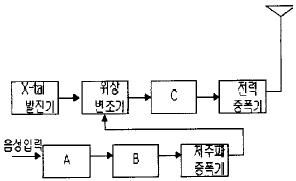
- 미분기, IDC(클리퍼), 주파수 체배기
- 프리엠퍼시스, 주파수 체배기, 평형변조기
- 프리엠퍼시스, IDC(클리퍼), 주파수 체배기
- 미분기, 주파수체배기, 평형변조기
(정답률: 알수없음)
36. 다음에서 설명하는 펄스통신방식은 연속 레벨변조방식 중 어느 것에 해당하는가?
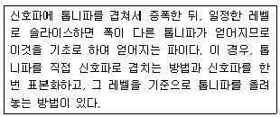
- PAM (Pulse Amplitude Modulation)
- PWM (Pulse Width Modulation)
- PPM (Pulse Position Modulation)
- PAM (Pulse Frequency Modulation)
(정답률: 알수없음)
37. 영상신호에서 Blanking level(귀선소거레벨)과 Reference white level(백색기준레벨)사이의 차를 백분율로 표시되며 움직이는 물체를 주사하는 시간동안의 Blanking level에 대한 평균신호레벨을 나타내는 용어는 다음중 어느것인가?
- Blanking level
- Chroma Signal
- APL (Average picture level)
- VIR (Vertical interval reference)
(정답률: 알수없음)
38. TV방송의 영상조정장치의 특성 측정을 하기 위해 2T, 20T Pulse나 Sin2파형을 발생하는 장비는?
- Oscilloscope
- Spectrum Analyzer
- Distortion Meter
- Pattern Generater
(정답률: 알수없음)
39. CATV 방송국이 방송신호를 직접 측정, 시험하기 위하여 갖추어야 할 장비에 속하지 않는 것은?
- 파형분석기
- 벡타스코프
- TV 신호발생기
- 비트에러 측정기
(정답률: 알수없음)
40. 다음은 잡음지수와 종합잡음지수에 대한 설명이다. 틀린 것은?
- 잡음지수 F는
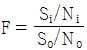
로 정의된다. - 종합잡음지수는 최종 뒷단에 있는 종단 증폭기의 이득에 가장 큰 영향을 받는다.
- 종합잡음지수는 초단 증폭기의 잡음지수에 큰 영향을 받는다
- 낮은 종합잡음지수가 입출력 회로간의 반드시 낮은 VSWR을 동시에 만족시키지는 않는다.
(정답률: 알수없음)
3과목: 방송미디어 개론
41. FM 변조에서 신호파 주파수는 50[kHz], 최대 주파수 편이가 200[kHz]인 때의 변조지수는?
- 5
- 50
- 500
- 4
(정답률: 알수없음)
42. 디지털 변조의 세가지 기본 형태가 아닌 것은?
- ASK
- FSK
- TSK
- PSK
(정답률: 알수없음)
43. 다음 보기 중 기존 신문에 대한 인터넷신문의 장점으로 가장 거리가 먼 것은?
- 상호작용성
- 속보성
- 심층적보도
- 휴대성
(정답률: 알수없음)
44. 현재 아날로그 TV에서 사용되는 전송 방식은?
- 잔류측파대 변조방식
- 상측파대 변조방식
- 하측파대 변조방식
- 양측파대 변조방식
(정답률: 알수없음)
45. 우리나라의 아날로그 텔레비전 표준방식은?
- NTSC
- PAL
- SECAM
- NAB
(정답률: 알수없음)
46. 공중전기통신사업자로부터 회선을 빌려 컴퓨터를 이용한 네트워크를 구성, 정보의 축적· 처리· 가공을 하는 통신서비스 또는 그 네트워크를 제공하는 사업을 말하는 것으로 이(異)기종 호스트 컴퓨터간 접속이나 단말기와의 접속 프로토콜변환을 네트워크내에서 가능하도록 할 수 있는 것은?
- WLL
- VAN
- CDMA
- MMDS
(정답률: 알수없음)
47. UHF 방송의 주파수 범위는?
- 30(㎒)∼300(㎒)
- 300(㎒)∼3000(㎒)
- 3(㎒)∼30(㎒)
- 30(㎑)∼300(㎑)
(정답률: 알수없음)
48. 코드분할다중방식(CDMA)방식의 종류가 아닌 것은?
- DS(직접확산방식)
- FH(주파수 도약방식)
- TH(시간 도약방식)
- FR(프레임 릴레이방식)
(정답률: 알수없음)
49. 내용의 해설 및 다큐멘터리 형식의 프로그램이나 드라마 줄거리 내용을 말로 설명하는 해설을 무엇이라고 하는가?
- 더빙
- 이벤트
- 리허설
- 나레이션
(정답률: 알수없음)
50. 영상신호를 재현하고자 오실로스코프를 7875Hz에 동기시켰다. 이 때 화면에 재현되는 영상정보는 무엇인가?
- 비월주사에 대한 영상정보
- 필드에 대한 영상정보
- 프레임에 대한 영상정보
- 수평주사선의 영상정보
(정답률: 알수없음)
51. TV방송전파를 이용하여 TV방송과 함께 동시에 2개 외국어로 정보를 전송할 수 있는 뉴미디어는?
- 문자다중 방송
- 음성다중방송
- 인터케스트 방송
- DARC
(정답률: 알수없음)
52. 다중방송을 실시 목적으로 분류할 때 해당되지 않는 것은?
- 주 서비스를 고품질화 하기 위한 것
- 주 서비스를 고기능화 하기 위한 것
- 독립된 새로운 서비스를 실시하기 위한 것
- 기존의 서비스를 반복하기 위한 것
(정답률: 알수없음)
53. 디지털 텔레비전 방송에서 채택하고 있는 영상압축 신호처리 방식은?
- JPEG
- M-JPEG
- ZIP-1
- MPEG-2
(정답률: 알수없음)
54. 방송의 멀티미디어를 표방하는 21세기의 통합 디지털방송을 무엇이라 하는가?
- DBS
- RDS
- ISDB
- DTV
(정답률: 알수없음)
55. 다음중 무선통신의 근본 원칙이 아닌 것은?
- 무선통신은 필요한 최소한의 사항만을 교신하여야 한다
- 무선통신에 사용되는 용어는 될 수 있는대로 간명하여야 한다.
- 통신상 오류를 인지할 때에는 반복해서 통신함으로서 오류를 제거해야 한다.
- 무선통신을 할 때에는 자국의 호출부호 호출명칭 또는 표식부호를 붙여 그 출처를 명확히 하여야 한다.
(정답률: 알수없음)
56. MPEG-2 압축방식이 주로 사용되는 영역에 알맞는 것은?
- 정지화상의 기록 매체
- 실시간 재현을 위한 방송 영상매체
- 음성 및 화상의 압축을 위한 전기 통신매체
- 음성을 압축 저장 기록하는 매체
(정답률: 알수없음)
57. 다음 중 영상 압축 알고리즘이 아닌 것은?
- DVI
- H.261
- MPEG
- G.722
(정답률: 알수없음)
58. 문자방송은 TV 방송전파중 다음의 어느것을 이용하여 문자를 전송하는가?
- 수직귀선소거기간
- 수평귀선소거기간
- 순차주사기간
- 비월주사기간
(정답률: 알수없음)
59. 다음 중 시각매체의 종류가 아닌 것은?
- 동영상
- 문자
- 화상
- 음향
(정답률: 알수없음)
60. 사운드 카드에 다양한 효과를 주기위한 디지털 신호처리 칩을 의미하는 용어는?
- DSP (Digital Signal Processor)
- ADPCM (Adaptive Delta Pulse Code Modulation)
- DAC (Digital Analog Converter)
- ADC (Analog Digital Converter)
(정답률: 알수없음)
4과목: 전자계산기 일반 및 방송설비기준
61. 방송장비 설비공사시 접지(Grounding)방법이 틀린 것은?
- 방송 장비에 연결되는 접지선은 전력선 접지와 분리하여야 한다.
- 외부에서 공급되는 음향신호의 케이블 중 실드선은 접지에 연결하여 사용한다.
- 외부로부터 공급되는 영상신호의 접지는 FLOATING 시켜야 한다.
- 장비를 방송시설의 RACK에 장착시 상호 접지가 되도록 한다.
(정답률: 알수없음)
62. 서브루틴에 대한 설명으로 틀린 것은?
- 자주 사용되는 일련의 프로그램은 서브루틴으로 구성한다.
- 인터럽트 발생시의 처리프로그램은 서브루틴으로 구성한다.
- 일반적으로 I/O 프로그램은 서브루틴으로 구성한다.
- 부프로그램은 주프로그램과 동시에 수행되도록 서브 루틴으로 구성한다.
(정답률: 알수없음)
63. 송신 공중선의 형식과 구성에서 틀린 것은?
- 정합이 충분할 것
- 만족한 지향성을 얻을 수 있을 것
- 공중선의 이득이 높고 능률이 좋을 것
- 수신선의 이득과 능률의 가능한 작은 것
(정답률: 알수없음)
64. 컴퓨터 시스템에서 명령형식을 보통 1-주소방식, 2-주소방식, 3-주소방식으로 분류하는 기준이 되는 것은?
- 기억 장치의 용량
- 명령어의 수
- 오퍼랜드의 수
- 레지스터의 수
(정답률: 알수없음)
65. ASCII 코드에서 존(ZONE) 비트로 사용되는 비트의 수는?
- 1
- 2
- 3
- 4
(정답률: 알수없음)
66. 전자계산기에서 계산속도가 빠른 단위 순서대로 나열된 것은?
- ps-ns-μs-ms
- μs-ps-ns-ms
- ms-μs-ns-ps
- ms-ns-μs-ps
(정답률: 알수없음)
67. 마이크로프로세서의 주소지정방식중 옳지 않은 것은?
- 즉치주소방식(immediate addressing)
- 간접주소방식(indirect addressing)
- 참조주소방식(reference addressing)
- 인덱스주소방식(indexing addressing)
(정답률: 알수없음)
68. 컴퓨터 시스템 성능 평가 요인들 중 해당되지 않는 것은?
- program size
- reliability
- throughput
- turnaround time
(정답률: 알수없음)
69. 선형 리스트중 마지막으로 입력한 자료가 제일 먼저 출력되는 LiFO(Last in first out)구조는?
- 트리
- 스택
- 큐
- 섹터
(정답률: 알수없음)
70. 2진수 0111을 그레이 코드(Gray code)로 바꾸면 무엇인가?
- 1010
- 0100
- 0000
- 1111
(정답률: 알수없음)
71. 방송법의 목적에 관련되지 않는 것은?
- 방송의 자유와 독립의 보장
- 민주적 여론 형성
- 방송사업자의 발전
- 국민문화의 향상
(정답률: 알수없음)
72. 방송국 검사의 종류가 아닌 것은?
- 임시검사
- 변경검사
- 수시검사
- 정기검사
(정답률: 알수없음)
73. 중계유선방송을 위한 수신공중선은 전파의 수신장애가 적은 장소에 설치하되, 다른 사람의 수신시설 또는 전기통신설비로부터 얼마이상 떨어져야 하는가?
- 1[m]
- 2[m]
- 2.5[m]
- 4.5[m]
(정답률: 알수없음)
74. TV 영상신호를 TV 방송전파로 발사할 때는 다음 중 어느 방식을 일반적으로 채택하고 있는가?
- 양측파대 방식
- 잔류측파대 방식
- 단측파대 저감반송파 방식
- 단측파대 억압반송파 방식
(정답률: 알수없음)
75. 보도, 교양, 오락, 등 다양한 방송 분야 상호간에 조화를 이루도록 방송 프로그램을 편성하는 것은?
- 종합편성
- 방송편성
- 방송분야
- 전문편성
(정답률: 알수없음)
76. 입출력장치와 마이크로프로세서 사이의 접속장치(Interface)에서 악수하기 (Handshaking)라는 뜻은?
- CPU의 병렬데이터를 I/O장치에 맞추어 직렬 데이터로 변환하기
- CPU와 I/O 장치 사이의 제어신호 교환하기
- I/O장치의 전압높이를 CPU에 맞추기
- CPU가 사용하지 않는 버스를 I/O 장치에서 제어하기
(정답률: 알수없음)
77. 지상파방송이나 위성방송 등을 수신하여 중계 송신하는 것을 무엇이라 하는가?
- 중계유선방송
- 종합유선방송
- 음악유선방송
- 자가유선방송
(정답률: 알수없음)
78. 일반적으로 요구되는 수신설비의 조건이 아닌 것은?
- 내부잡음이 적을 것
- 명료도가 충분할 것
- 감도가 적을 것
- 선택도가 클 것
(정답률: 알수없음)
79. 전파법에서 정한 공중선전력의 표시방법이 아닌 것은?
- 첨두전력
- 반송파전력
- 변조전력
- 평균전력
(정답률: 알수없음)
80. 다음 중에서 일반적으로 프로그램을 수행하는데 필요하지 않는 장치는 어느 것인가?
- 보조기억장치
- 연산장치
- 제어장치
- 기억장치
(정답률: 알수없음)